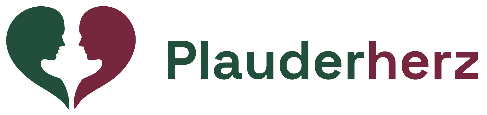
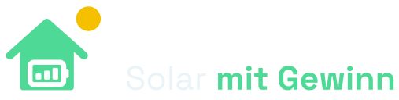
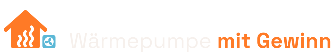

Werkzeuge, die ehrlich rechnen und zuhören.
Gebaut von Thomas Koormann in Lingen (Ems).
Produkte ansehen Kontakt aufnehmenProdukte
Drei eigenständige Produkte für unterschiedliche Menschen: Rechner für Entscheidungen rund ums Haus und ein Gesprächsbegleiter für den Alltag.

Plauderherz
Jemand zum Reden, jeden Tag. Ein Begleiter, mit dem man spricht statt tippt: hilft bei Briefen und Alltagsfragen, hört zu und erinnert sich an frühere Gespräche.
- Für
- Menschen über 65 und ihre Angehörigen
- Stand
- Live unter plauderherz.de, 5 Minuten am Tag kostenlos

Solar mit Gewinn
Lohnt sich Photovoltaik mit Speicher auf meinem Dach? Ertrag aus echten Standortdaten, Amortisation ehrlich gerechnet, vorliegende Angebote eingeordnet.
- Für
- Hausbesitzer vor dem Kauf einer PV-Anlage
- Stand
- Live unter solarmitgewinn.de, kostenlos

Wärmepumpe mit Gewinn
Rechnet sich eine Wärmepumpe in meinem Haus? Heizlast, Jahresarbeitszahl und laufende Kosten im Vergleich zur bisherigen Heizung.
- Für
- Hausbesitzer vor dem Heizungstausch
- Stand
- Live unter waermepumpemitgewinn.de, kostenlos
Open Source
Eine Berechnungsplattform für den Maschinen- und Anlagenbau: 24 Rechner in sechs Fachgebieten, mit nachvollziehbarem Rechenweg. Der Rechenkern ist frei nutzbar.
EngiCalc
Strömung, Wärme, Festigkeit, Maschinenelemente, Pumpen und Akustik. Rechner und Assistent laufen im Browser, keine Eingabe verlässt das Gerät.
- Für
- Ingenieure und Techniker
- Stand
- Live unter engicalc.tkai.tech, kostenlos
engicalc-core
Alle Formeln von EngiCalc als abhängigkeitsfreie Bibliothek, mit Tests.
- Für
- Entwickler, die eigene Rechner bauen
- Stand
- Auf GitHub und npm, MIT-Lizenz
Interessen
Ein Thema, mit dem ich mich beschäftige, ohne eigenes Angebot.
Wer steht dahinter
Ich bin Thomas Koormann aus Lingen (Ems) und entwickle die Werkzeuge von tkai.tech. Von der ersten Idee bis zum laufenden Betrieb bin ich dein Ansprechpartner.
- Sprechen statt tippen. Ich glaube, dass wir mit KI künftig vor allem über Sprache umgehen werden. Plauderherz funktioniert schon heute so: kein Menü, keine Tastatur, nur ein Gespräch.
- Ehrlich gerechnet. Die Rechner zeigen ihre Annahmen und Datenquellen. Rechnet sich etwas nicht, steht das genauso deutlich da.
- Sparsam mit Daten. Keine Werbe-Cookies, kein Tracking. Die Produkte laufen auf Servern in Deutschland.
- Offen über die Technik. Welche Dienste wofür eingesetzt werden, steht auf einer eigenen Seite: Werkzeuge und Dienste.
Kontakt
Fragen zu einem Produkt, einen Fehler gefunden oder Interesse an einer Zusammenarbeit: Eine Mail genügt.
hallo@tkai.tech